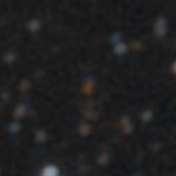
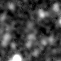

NASA Space Apps 2026
We are 102 Colours.
Paul and Aziz · Planet X and SPHEREx
SPHEREx photographs the whole sky every six months.
Who looks at what changed?
A public web tool
Blinking Sky
Real NASA images. Blink them. See what changed.
WISE 0855−0714 · real SPHEREx images


Blink two dates.
What moves is close to us.
This brown dwarf is 7 light-years away.
Black: where it was. White: where it is now.
CWISE J2359−2809 · one of the twelve candidates
Use Blinking Sky to cross SPHEREx with other surveys.

WISE says where to look:
red, and moving.


SPHEREx says what it is:
gone in the methane band.
One 3D map of what SPHEREx sees.
7,083 asteroids · 15,739 dwarfs · 43,463 galaxies, at real distances.
Search any object or position.
Its images are read live from NASA’s archive.
Stars flare up: 4.4 times brighter.
Measured live, date by date.
Like Backyard Worlds: look, and vote.
Every vote is shared with the community.
Light missing at 3.3 µmthe spectrum of the same source
↓Methane absorbs thereit only survives in a cold atmosphere
↓A cold brown dwarfa candidate, until a telescope confirms it

The result
Blinking Sky is submitting 12 new brown dwarf candidates.
No publication found. Waiting for a spectrum.
The next one is yours to find.
382 more sources nobody has checked.
Data: NASA/JPL-Caltech SPHEREx · NASA/IPAC IRSA · CatWISE2020 · Music: Kevin MacLeod, CC BY 4.0